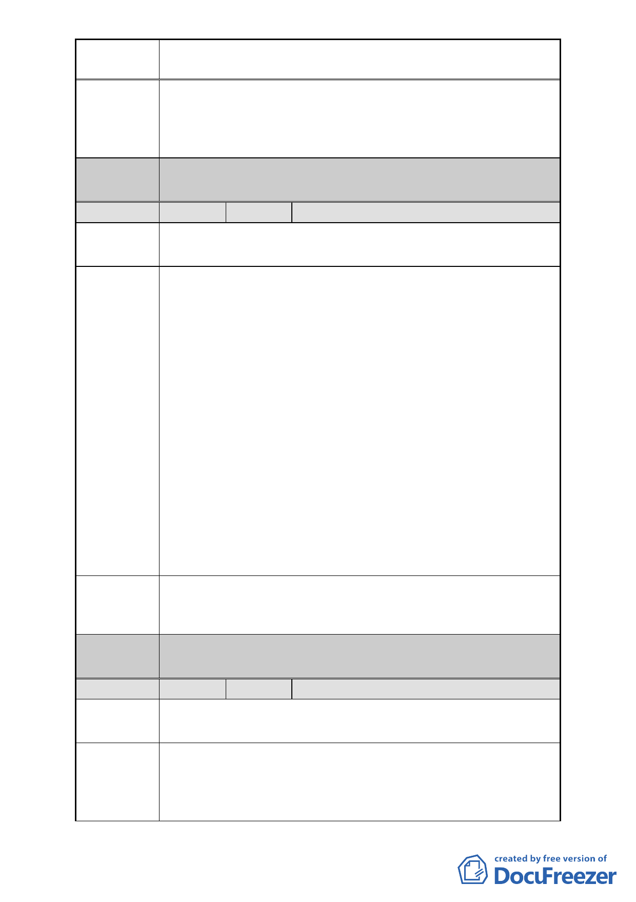

案名
建議辦法
委員會
決議
編號
陳情地點
陳情理由
建議辦法
委員會
決議
編號
陳情地點
陳情理由
變更臺北市中正區南海段一小段 719、724 地號等 2 筆停車場
用地為廣場用地細部計畫案
此地段本來是公園預定地，幾十年來經數次變更，一塊變為
住商用地（廣東同鄉會），一塊變為交通用地，本區塊則變更
為廣場－停車場用地，是以應利用這次機會慎重檢討，予以
變更為商業用地，以利地盡其用。
同編號 1。
5 陳情人 翁有德
中正區南海段一小段 719、724 地號
中正區羅斯福路一段 53 號
有鑑於都市計畫委員會預將座落於臺北市中正區南海一小段
719-1 地號之國有地，規劃闢建作為廣場廣場用地之計畫案，
此舉頗令久居於這塊土地上之平民百姓深感疑惑與百思不
解，因在此地號周邊已有中正紀念堂自由廣場（相距不及百
米）又植物園及 228 紀念公園等處環繞下，居然還要將此具
有多元化多目標使用之稀有國有財產用地，將此地規劃之廣
場用地之範圍內，真是嚴重污辱都市計畫委員會，參與此項
計畫之委員諸君及上級長官的智慧與遠見，參與此項規劃之
委員，理應秉持「物盡其用、地盡其利」之基本原則為前提，
以及維護郝市長所帶領的市府團隊在處理此計畫案時，是以
草率與辦事不力的污名而收場，嚴重影響郝市長施政之功
績。現居於此地號上之居民深切期盼都市計畫委員會之委員
諸君，能以同理心去仔細、謹慎的來規劃可讓住戶與市府均
蒙其利，此為我們這些住戶之希望與期盼。本人建議都市計
畫委員會將此地移交捷運局多目標共構，興建捷運大樓，將
原住戶就地安置。
請都市計畫委員會將建議位置中正區南海段一小段 719、724
地號移交捷運局多目標共構，興建捷運大樓，將住戶就地安
置。
同編號 1。
6 陳情人 方家泰
中正區南海段一小段 719、724 地號
中正區羅斯福路一段 59 號
原有住戶之房屋是早期已有之舊屋，且在古亭區地政中心登
記在案，並於臺北市中正區戶政事務所中設籍，乃是合法取
得房屋。
市政府都市之變更，多年來，政策多變，而市政府閉門作業，
-8-